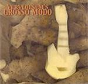

| Artist: | Pierre Vervloesem |
| Title: | Grosso Modo |
| Label: | Carbon 7 C7-063 |
| Length(s): | 54 minutes |
| Year(s) of release: | 2002 |
| Month of review: | [09/2002] |
| 1) | Hairdressers Go Home | 5.01 |
| 2) | Olympic Troubles | 4.10 |
| 3) | Anti Caking Agent | 3.19 |
| 4) | Amazing Grease | 3.24 |
| 5) | Smacked Down By The Lord Again | 5.33 |
| 6) | Have You Seen Me? | 4.58 |
| 7) | The Terrible Rage Of The Sky | 5.59 |
| 8) | Full Metal Carpet | 7.06 |
| 9) | Nobody's Listening Anyway | 13.58 |
Olympic Troubles has a very strong American feel: this is something likely to be turned out by an American band on Cuneiform. Twangy guitars, plenty of beat, plenty of noodling on the guitar, it seems to me the guitar is getting throttled here, not played. Both playful, improvised?, and heavy into hectic, this fragmentary piece has it all. Even some twirling keyboards and strumming acoustics and a melody played by the bass guitar.
Manic circus music abounds on Anti Caking Agent, with its wonderful urgent organ playing. I was thinking along the lines of Land Of Chocolate and a bit of Echolyn here. No vocals though. Then then music dissolves entirely and we are left with the occasional dissonant note on the piano. We are now in the second minute of the song and its character has changed incredibly. Slowly, ponderously, the music wants to get back on track, but the ante is upped, by letting us wait. Quick runs of piano, a whistle bring us back to the slow ponderousness, giving way to yet more piano. Ah, now the rock gets into the music again, and the circus theme returns running rings around its listeners and the climactic organ fills the final seconds. Fortunately we were not left in the
Amazing Grease, humour belongs in music, opens with Crimsonesque bangs and gets to be quite a strain on the ear. The jazzy keyboards get pounced on by some loud hammered rock, outgrinding even the big Crim. These guys are really at it. Smacked Down By The Lord Again is more in the line of the beginning of Olympic Troubles. Rock for a Spaghetti Western, migth as well have been its title. The melody apparent in this song is wonderfully telling and what brooding atmosphere, at times even reminiscent of the earliest incarnation of King Crimson. The best track so far.
On Have You Seen Me? we hear mainly the King Crimson of today during one of their improvs. The guitar is often quite similar to Fripp in my ears, later it gets to be more meandering, but always tense. The 21st Century Schizoid Man taken into the 21st century. Chaos improvised. A song such as this would lend itself getting clear of people in your direct vicinity, burning off a few ears in the process. Unless of course, these people happen to like this style of music, in which case only the burning part actually happens.
The Terrible Rage Of The Sky is a tweaky affair with all kinds of weird keyboards and guitar sounds mimicking something that sounds to me like a war in space and a compendium cars in a big city. But hey, from underneath a rock crawls this rather funky gurgly melody. These guys fly some strange orbit on this track. Where do these sounds all come from?
On Full Metal Carpet, the music is slow, pounding and grinding, this time with the for RIO typical meandering wind instruments, played here by Peter Vermeersch. Chaos reigns also here, in between the primal soup of the muscially sparser parts. Is this how life on earth came about? Nobody's Listening Anyway is the almost 14 minute epic where the intensity jumps out of the grooves of the cd. Dissonance, large masses of angry insects, bleepy morse code, give way to a funky groove. There is plenty of variation on a track such as this of course, but an appealing melody would have been nice. Now it is more an improvisational rock track with some particularly driving drumming by mister Hayward, and some extremely fast paced bass by Segers. Then the keyboards also involve themselves again for some fast meandering. The final part is quite nice again, with some more thematic aspects. I would like the song more, if it would have been supported by a bit more melody.